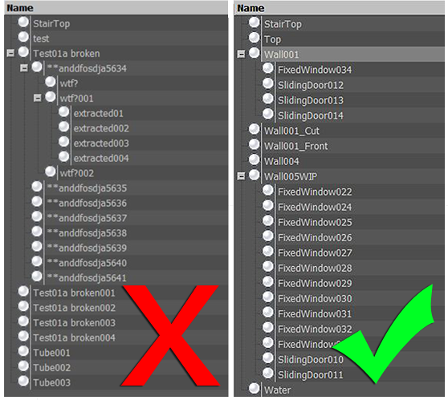
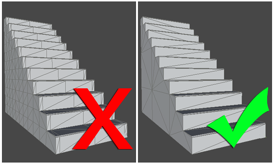
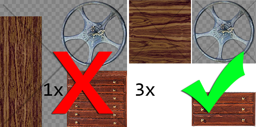
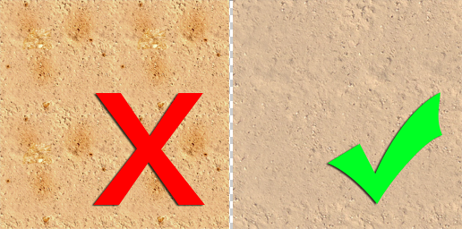
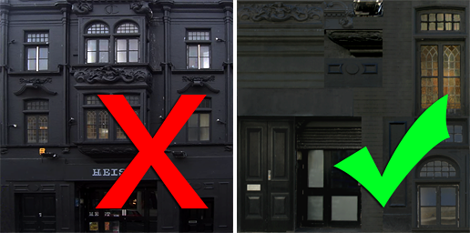

Thank you for helping us improve the quality of Unity Documentation. Although we cannot accept all submissions, we do read each suggested change from our users and will make updates where applicable.
For some reason your suggested change could not be submitted. Please try again in a few minutes. And thank you for taking the time to help us improve the quality of Unity Documentation.
Unity supports textured 3D models from a variety of programs or sources. This short guide has been put together by games artists with developers at Unity, to help you create assets that work better and more efficiently in your Unity project.
Scale & Units
Set your system and project units for your software to work consistently with Unity e.g. Metric.
Working to scale can be important for both lighting and physics simulation.
Be aware that, for example, the Max system unit default is inches and Maya is centimetres.
Unity has different scaling for FBX and 3D application files on import; check the FBX import scale setting in Inspector.
If in doubt export a metre cube with your scene to match in Unity.
Animation frame rate defaults can be different in packages, is a good idea to set consistently across your pipeline, for example 30fps.
Files & Objects
Name objects in your scene sensibly and uniquely. This can help you locate and troubleshoot specific meshes in your project.
Avoid special characters *()?"#$ etc.
Use simple but descriptive names for both objects and files (allow for duplication later).
Keep your hierarchies as simple as you can.
With big projects in your 3D application, consider having a working file outside your Unity project directory. This can often save time consuming updates and importing unnecessary data.

Sensibly named objects help you find things quickly
Mesh
Build with an efficient topology. Use polygons only where you need them.
Optimise your geometry if it has too many polygons. Many character models need to be intelligently optimised or even rebuilt by an artist especially if sourced/built from:
3D capture data
Poser
Zbrush
Other high density Nurbs/Patch models designed for render
Where you can afford them, evenly spaced polygons in buildings, landscape and architecture will help spread lighting and avoid awkward kinks.
Avoid really long thin triangles.

Stairway to framerate heaven
The method you use to construct objects can have a massive affect on the number of polygons, especially when not optimised. In this digram the same shape mesh has 156 triangles on the right and 726 on the left. 726 may not sound like a great deal of polygons, but if this is used 40 times in a level, you will really start to see the savings. A good rule of thumb is often to start simple and add detail where needed. It’s always easier to add polygon than take them away.
Textures
If you author your textures to a power of two (e.g. 512x512 or 256x1024), the textures will be more efficient and won’t need rescaling at build time. You can use up to 4096x4096 pixels, (although 2048x2048 is the highest available on many graphics cards/platforms). Search online for expert advice on creating good textures, but some of these guidelines can help you get the most efficient results from your project:
Work with a high-resolution source file outside your unity project (such as a PSD or Gimp file). You can always downsize from source but not the other way round.
Use the texture resolution output you require in your scene (save a copy, for example a 256x256 optimised PNG or a TGA file). You can make a judgement based on where the texture will be seen and where it is mapped.
Store your output texture files together in your Unity project (for example: \Assets\textures).
Make sure your 3D working file is referring to the same textures for consistency when you save/export.
Make use of the available space in your texture, but be aware of different materials requiring different parts of the same texture. You can end up using/loading that texture multiple times.
For alpha (cutout) and elements that may require different shaders, separate the textures. For example, the single texture below (left) has been replaced by three smaller textures below (right)

One texture (left) vs three textures (right)
Make use of tiling textures (which seamlessly repeat) then you can use better resolution repeating over space.
Remove easily noticeable repeating elements from your bitmap, and be careful with contrast. If you want to add details use decals and objects to break up the repeats.

Tiling textures ftw
Unity takes care of compression for the output platform, so unless your source is already a JPG of the correct resolution it’s better to use a lossless format for your textures.
When creating a texture page from photographs, reduce the page to individual modular sections that can repeat. For example, you don’t need twelve of the same windows using up texture space. That way you can have more pixel detail for that one window.

Do you need ALL those windows?
Materials
Organise and name the materials in your scene. This way you can find and edit your materials in Unity more easily when they’ve imported
You can choose to create materials in Unity from either:
<modelname> material name> or:
<texture name> - make sure you are aware of which you want.
Settings for materials in your native package will not all be imported to Unity:
Diffuse Colour, Diffuse texture and Names are usually supported
Shader model, specular, normal, other secondary textures and substance material settings will not be recognised/imported
Import/Export
Unity can use two types of files: Saved 3D application files and Exported 3D formats. Which you decide to use can be quite important:
Saved application files
Unity can import, through conversion: Max, Maya, Blender, Cinema4D, Modo, Lightwave & cheetah3D files, e.g. .MAX, .MB, .MA etc.
see more in Importing Objects.
Advantages:
Quick iteration process (save and Unity updates)
Simple initially
Disadvantages:
A licensed copy of that software must be installed on all machines using the Unity project
Files can become bloated with unnecessary data
Big files can slow Unity updates
Less Validation and harder to troubleshoot problems
Exported 3D formats
Unity can also read FBX, OBJ, 3DS, DAE & DXF files. For a general export guide you can refer to this section.
Advantages:
Only export the data you need
Verify your data (re-import into 3D package) before Unity
Generally smaller files
Encourages modular approach
Disadvantages:
Can be slower pipeline or prototyping and iterations
Easier to lose track of versions between source (working file) and game data (exported FBX)